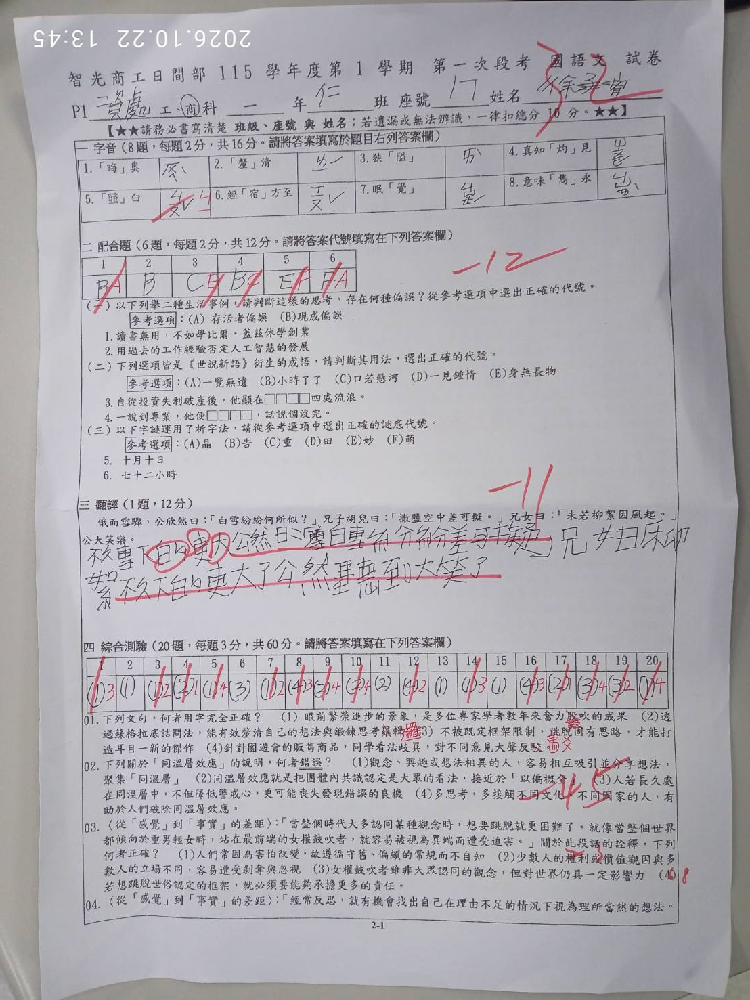
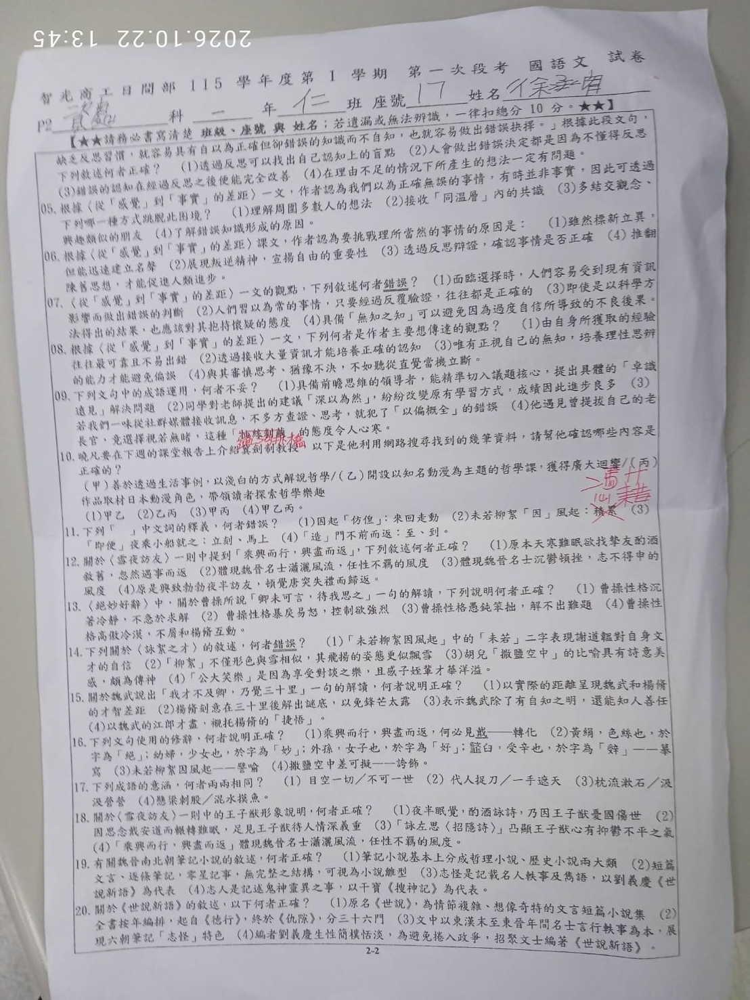
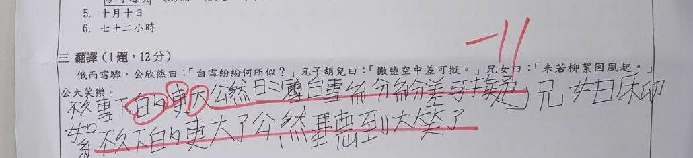

徐奕甯 第一次段考・國語文試卷
本網站已全面轉正並解析你的 p1.jpg 與 p2.jpg 考卷。本次總得分為 32 分，共計 21 處失分點。不用灰心，透過本系統「圖文並茂」的五維剖析與互動重測，把每一次錯誤轉化為下次段考前進 40 分的踏腳石！
答對 7 題 / 錯 1 題（第1題「晦奧」答對、第5題「齏臼」扣2分），基礎發音掌握度佳！
答對 1 題 / 錯 5 題。存活者偏誤與成語「身無長物」為失分重災。
僅拿 1 分！漏譯核心提問句，抄寫原文未做白話轉換。
20 題中答對 5 題、答錯 15 題。審題粗心與課文主旨混淆為主因。
【考卷批改特別鑑定】配合題第 2 題的分數疑雲
你在考卷配合題第 2 題（用過去工作經驗否定AI發展）答案格中填寫了 (B)，此題答案正是「現成偏誤 (B)」，完全正確！
雖然考卷右上方老師隨手標註了紅字「-12」，但請注意：14 (字音) + 2 (配合題第2題) + 1 (翻譯) + 15 (綜合測驗 5 題) = 32 分。老師總分核算已包含了這 2 分，但若下次遇見卷面標註全扣的情況，建議主動找老師禮貌確認，避免權益受損！
🎯 本次段考 4 大致命痛點診斷
逆向審題盲點（看反題目）
題目明明問「何者錯誤」或「何者不妥」，卻下意識選了「完全正確」的選項，直接白白送掉 6~9 分！（如第7題、第14題）
成語字詞望文生義
將「深以為然」誤以為是不贊同、把「身無長物」的長物當成長度、把「代人捉刀」誤當成一手遮天。成語典故未真正落實到腦海中。
哲學課文主旨背道而馳
〈從感覺到事實的差距〉核心在於破除直覺、走出同溫層，作答時卻選了「聽從直覺當機立斷」或「順從多數人想法」，恰好掉入作者批判的陷阱。
文言翻譯缺乏字字對譯
翻譯題直接抄寫文言原文，遺漏了「白雪紛紛何所似」的提問，甚至寫出「甚至到大笑了」這種語法不通的拼湊句，導致 12 分只拿 1 分。
考卷原卷高解析對照鏡
我們已為你將原始 p1.jpg 與 p2.jpg 旋轉為 100% 正向，點擊題目熱點可直接跳轉至該題詳解。


錯題全方位圖文精析庫
每道錯題均附有「原始試卷剪裁真跡」、「錯誤原因深入診斷」、「考點全彩圖解」、「記憶口訣」與「即刻自我檢驗」！
文言文翻譯重災區特訓：〈詠絮之才〉
本次翻譯大題 12 分僅得 1 分，失分高達 11 分！掌握「字字落實、補全省略、現代順讀」三大關鍵，下次段考穩拿 12 分滿分！
📜 原文文言句
俄而雪驟，公欣然曰：「白雪紛紛何所似？」兄子胡兒曰：「撒鹽空中差可擬。」兄女曰：「未若柳絮因風起。」公大笑樂。
你的考卷作答真跡剪裁：

🚨 為什麼只給 1 分？四大致命傷
-
❌
致命盲點 1：核心問題整句漏譯！
謝安出題的「白雪紛紛何所似？」完全沒有翻譯出來，這是全段對話的核心起點！
-
❌
致命盲點 2：直接照抄原文
把「撒鹽空中差可擬」和「未若柳絮因風起」抄在括號裡，閱卷老師認定為「並未做白話翻譯」。
-
❌
致命盲點 3：生硬拼湊與文法崩潰
塗改後寫成「公欣然甚至到大笑了」，中文語法完全不通順；「雪下的更大」的「的」應為動詞後補語「得」。
📖 逐字逐句拆解標準精譯表
| 文言原文 | 字詞解析（重點得分點） | 標準白話翻譯 | 得分關鍵注意事項 |
|---|---|---|---|
| 俄而雪驟 | 俄而：不久。驟：急、大。 | 不久，雪下得更急， | 「俄而」常考時間副詞，務必翻成「不久」或「一會兒」。 |
| 公欣然曰 | 公：指謝太傅（謝安）。欣然：興致勃勃的樣子。 | 謝太傅興致勃勃地說： | 「公」譯為「謝太傅」或「謝安」；「欣然」譯為「興致勃勃地」。 |
| 「白雪紛紛何所似？」 | 何所似：倒裝句，即「似何所」，像什麼呢？ | 「紛飛的白雪像什麼呢？」 | 漏譯扣重分！必須完整翻出提問句。 |
| 兄子胡兒曰 | 兄子：姪子。胡兒：謝朗乳名。 | 姪子胡兒說： | 「兄子」譯為「姪子」，胡兒可保留或註記謝朗。 |
| 「撒鹽空中差可擬。」 | 差：大體、大約。擬：相比、比擬。 | 「把鹽撒在空中大約可以比擬了。」 | 「差可擬」必須翻譯！不可抄原文。 |
| 兄女曰 | 兄女：姪女（指才女謝道韞）。 | 姪女謝道韞說： | 「兄女」譯為「姪女」，指東晉著名女詩人謝道韞。 |
| 「未若柳絮因風起。」 | 未若：不如說。因：憑藉。起：飛揚。 | 「不如說像柳絮憑藉風勢在空中飛揚。」 | 「未若」=不如說，「因」=憑藉。全篇詩眼！ |
| 公大笑樂。 | 大笑樂：樂得開懷大笑。 | 謝太傅聽了樂得開懷大笑。 | 順暢收尾，不可寫成「甚至到大笑」。 |
「不久，雪下得更急，謝太傅興致勃勃地說：『紛飛的白雪像什麼呢？』姪子胡兒說：『把鹽撒在空中大約可以比擬了。』姪女謝道韞說：『不如說像柳絮憑藉風勢在空中飛揚。』謝太傅聽了樂得開懷大笑。」
錯題盲測通關大挑戰
將段考 21 道錯題化身為互動測驗卡！親自動手重答一遍，立即檢驗自己是否真正搞懂，通關率達 100% 即可領取段考進步證書！